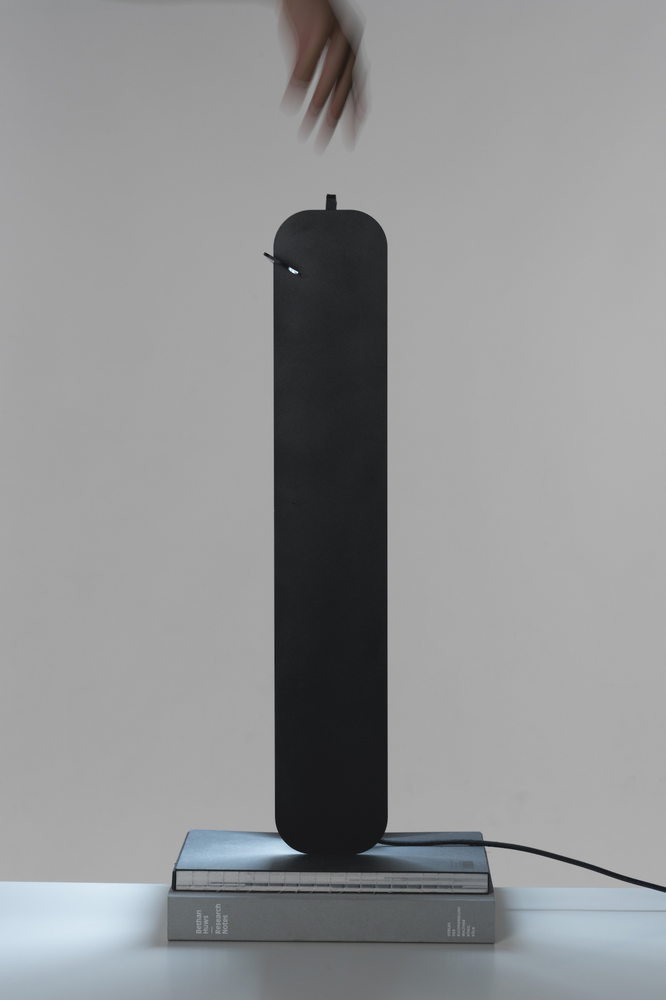
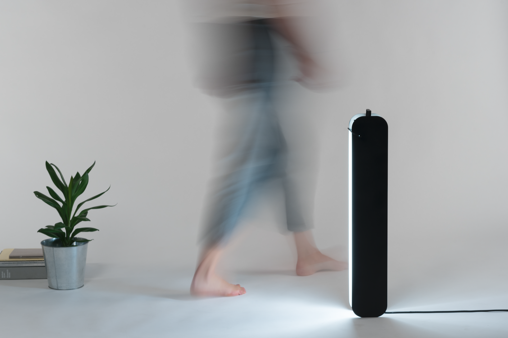
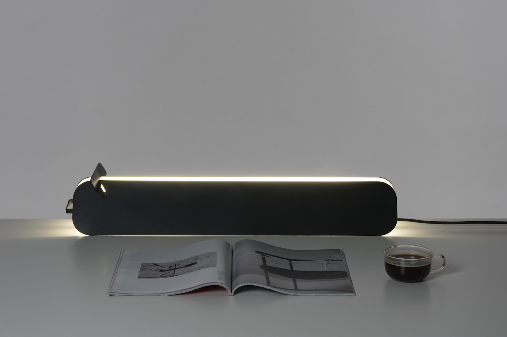
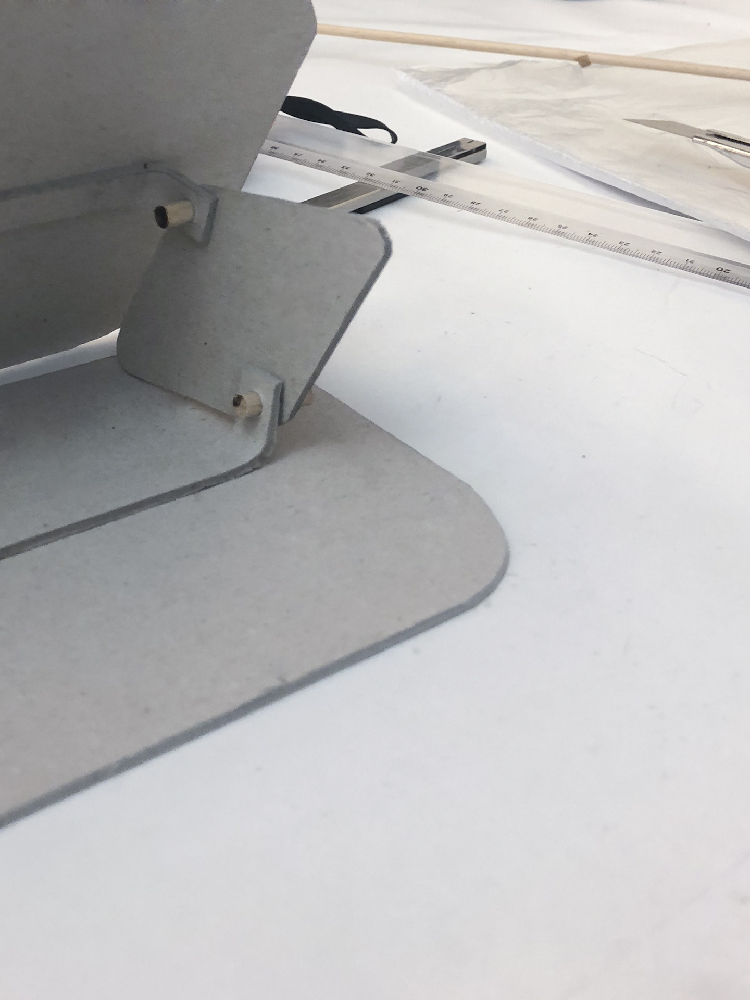
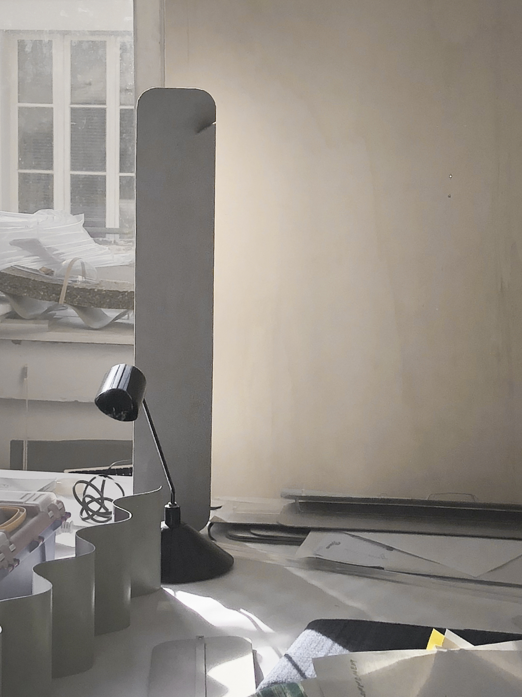

<!DOCTYPE html>
<html>
</html>

<head>
  <meta charset="UTF-8">
  <title>Juliette Collin</title>
  <meta name="viewport" content="width=device-width, initial-scale=1">
  <link rel="stylesheet" href="juliettecollin-projetsS9.css">

</head>

<body>
<section class="content-container ">

  <div class="content-orange">

        <div class="header">Juliette Collin © 2020</div>

        <a href="juliettecollin-projetsS9.html" class="retour">Retour</a>
        <a href="#abri" class="texte-projet">Jour<br>
            <em>2018</em><br>
            Les lampes Jour sont inspirées des volets. Elles s’ouvrent ou se ferment à la lumière et font varient l’éclairage. Fabriquées en tôle d’aluminium, les lampes Jour répondent aux besoins de maniabilité et de légèreté d’un objet nomade. La lampe Jour existe en deux dimensions. La plus petite est adaptée à un chevet. tandis que la plus grande peut éclairer un bureau ou de plus grands espaces. Avec Soufyane El Koraichi.<br>
          </a>
        </div>

  <div class="content-violet">

    <div class="flex-container-projet">
      <div>
                  
      </div>

      <div>
        
      </div>
      <div>
        
      </div>
      <div>
        
      </div>

      <div>
        
      </div>
      <div>
        
      </div>
      <div>
        
      </div>


    </div>        

  </div>
</section>    

</body>

